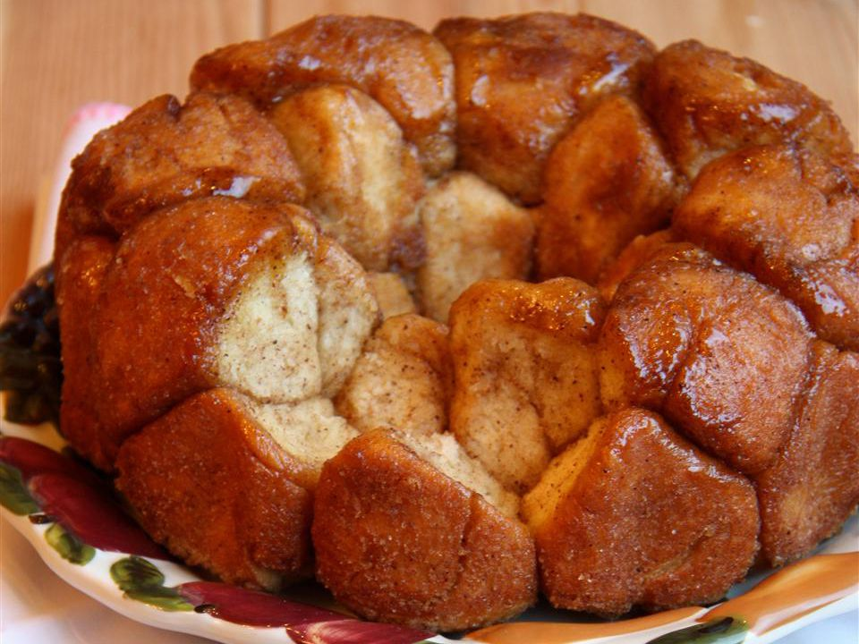

Monkey Bread Recipe

Monkey Bread
Monkey bread is made by rolling tender, fluffy dough in cinnamon sugar and baked in a Bundt pan with a generous drizzle of melted butter and brown sugar. It’s simply made for sharing. It’s like the best part of a cinnamon roll (the gooey inside), but an entire cake of it.
It may sound too good to be true, but it gets better. It's so easy to make you can throw it together for breakfast in the morning with no hassle and no waiting for the dough to rise since it uses canned store-bought buttermilk biscuit dough.
Ingredients
- 1/2 cup (100g) granulated sugar
- 2 teaspoons ground cinnamon
- 2 (16.3-ounce) cans buttermilk biscuit dough (not flaky)
- 3/4 cup (170g) unsalted butter, plus more for Bundt pan
- 3/4 cup (160g) packed light brown sugar
- 1 teaspoon vanilla extract
Steps
- Preheat the oven to 350°F.
Grease a 12-cup Bundt pan liberally with butter or nonstick baking spray. Set it aside.
- Prepare the cinnamon sugar and biscuit dough:
In a large bowl, whisk together the granulated sugar and cinnamon.
Separate the biscuit dough and cut each biscuit into 6 evenly sized pieces.
- Coat the biscuit dough:
Add the biscuit pieces to the bowl of cinnamon sugar, and use your hands to toss and evenly coat each piece with the cinnamon sugar. Transfer the coated dough and any extra cinnamon sugar into the prepared Bundt pan, and distribute them evenly in the pan.
- Melt the butter and brown sugar:
In a small saucepan over medium heat, melt the butter and brown sugar. Cook for a few minutes, stirring, until smooth and fully combined. Take the butter mixture off the heat and stir in the vanilla extract. Evenly pour the butter mixture over the dough.
- Bake:
Bake for 35 minutes, or until the top is golden brown and the caramel coating begins to bubble around the edges of the pan.
- Cool:
Remove the monkey bread from the oven and let it cool in the pan set on a wire rack for about 10 minutes. Loosen the sides with a spatula or butter knife. Flip a large round plate or platter upside down over the pan. Then, carefully flip the pan. You may have pieces of dough stuck to the pan. That’s okay! Simply remove them and tuck them back into the monkey bread. Serve warm.
Monkey bread is best served warm on the day it is baked. Any leftovers can be stored airtight at room temperature for 1 day, or in the refrigerator for up to 4 days. Reheat the monkey bread in a 300°F oven until warm to the touch, or heat individual servings in the microwave.